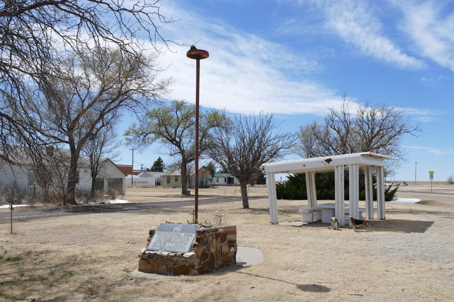

Between Dodge City and Santa Fe we picnicked in Oklahoma, in one of a long series of towns spaced regularly along routes 56 and 412, each with its grain elevator. Most provided a picnic table or two for travelers.
Halley Beagle Keyes Oklahoma Wallace Beagle